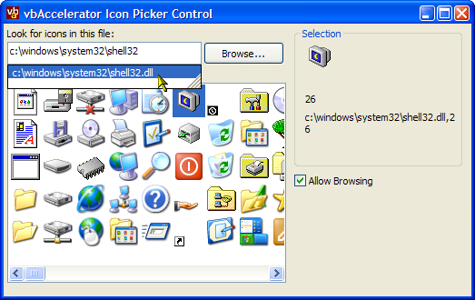

VB5 Icon Selector Control (24K)
VB5 Icon Selector Control (24K)
 VB5 Icon Selector Demonstration (9K)
VB5 Icon Selector Demonstration (9K)
 VB5 Icon Selector Full Source (59K)
VB5 Icon Selector Full Source (59K)
 VB6 Icon Selector Control (24K)
VB6 Icon Selector Control (24K)
 VB6 Icon Selector Demonstration (9K)
VB6 Icon Selector Demonstration (9K)
 VB6 Icon Selector Full Source (59K)
VB6 Icon Selector Full Source (59K)
 28 Mar 2003
28 Mar 2003
Now using ExtractIconEx rather than resource enumeration to pick the icon. This ensures the id is compatible with the ShellLink interface.
Fixed bug preventing SelectionChange events from being sent.
When an icon file is specified in code, the file name now appears in the text box.
 Subclassing Without The Crashes
Subclassing Without The Crashes
 Two code only solutions for displaying Common/Dialogs
Two code only solutions for displaying Common/Dialogs
 Reading Data from Local or External Library Resources
Reading Data from Local or External Library Resources
 Ole Guid and interface definitions (OleGuids.Tlb)
Ole Guid and interface definitions (OleGuids.Tlb)
 Owner Draw Combo and List Boxes Version 2.1
Owner Draw Combo and List Boxes Version 2.1
 Add File or URL AutoCompletion to TextBoxes and ComboBoxes
Add File or URL AutoCompletion to TextBoxes and ComboBoxes
 vbAccelerator ImageList Control and Class v2.0
vbAccelerator ImageList Control and Class v2.0

vbAccelerator Icon Selector Control
An Icon Selector which precisely emulates the Windows Change Icon Dialog.
This control provides a simple to use icon selector, and works in the exactly the same way as the Change Icon dialog in Windows. You can either use it to select existing icons, or you can add your own.
About The Control
The control has been designed to be as simple as possible whilst providing all the features you need to implement an icon selection dialog. Please feel free to enhance it and build your own version if you want more features!
Style Properties
The Font property allows you to select the font used in the control, and the AllowChangeFile property determines whether the text box and Browse buttons are displayed or not.
Setting Icons To Choose From
Setting the FileName property will load all available icons from the selected file. If the SelectedIconResourceId property has been set to a resource in the file, then this will automatically be selected once the file is loaded. To clear the control, set the FileName property to a blank string.
Determining the Selected Item
You can get the selected item's resource id from the SelectedIconResourceId property, or the icon itself from the SelectedIcon property. The SelectionChange event is fired whenever the selected item is changed.
Other Events
In a dialog, double-clicking on an item or pressing Return would imply the user has made a selection. The control supports DblClick, KeyDown, KeyPress and KeyUp events to allow you to implement this.
Icon Selection in the Shell
Although the Shell clearly includes an icon selection dialog, this dialog isn't exposed through any API. Its probably possible to invoke the dialog through an undocumented Shell call, but such things cause trouble in the long run as new versions of Windows are released. So this control re-implements the icon selector from scratch.
Pointing a Windows Spy at the Windows dialog reveals that the icon selection is done using an owner-draw list box, with these styles set:
- LBS_OWNERDRAWFIXED - Allows the owner of the control to draw the items, and specifies that all items have the same size.
- LBS_MULTICOLUMN - Allows multiple columns of items in the ListBox.
- WS_HSCROLL and not WS_VSCROLL - ensures the Window has a Horizontal scroll bar but not a vertical one.
In Detail - Creating The Control
VB doesn't allow you to modify the built-in ListBox to set these styles, but using some of the code from the Owner-Draw Combo and List Box you can create on yourself.
Creating the ListBox
Building a ListBox with the correct styles using the API is achieved like this:
' Create the list box:
hInst = App.hInstance
' Set up style bits to get the appropriate type of
' window:
sStyle = "LISTBOX"
wStyle = WS_VISIBLE Or WS_CHILD
wStyle = wStyle Or LBS_HASSTRINGS Or _
LBS_OWNERDRAWFIXED Or LBS_NOTIFY Or LBS_MULTICOLUMN
wStyle = wStyle Or WS_HSCROLL
lH = 48
' Create the window:
lW = UserControl.Width \ Screen.TwipsPerPixelX
m_hWndParent = UserControl.hwnd
m_hWnd = CreateWindowEx( _
WS_EX_CLIENTEDGE, _
sStyle, _
"", _
wStyle, _
0, 0, lW, lH, _
m_hWndParent, _
0, _
hInst, _
ByVal 0 _
)
' If we succeed
If Not (m_hWnd = 0) Then
m_hBackBrush = GetSysColorBrush( _
vbWindowBackground And &H1F&)
' Ensure the correct font:
SendMessageByLong m_hWnd, WM_SETFONT, m_fnt.hFont, 1
' Start subclassing:
pSubClass
End If
In order to make the control work, you need to do two things:
- Implement the IOLEInPlaceActiveObject Interface. If you don't do this, then VB will get confused about focus and the tab key will stop working.
- Subclass for these messages:
- WM_DRAWITEM - Sent to the parent of the control whenever an item needs to be draw.
- WM_CTLCOLORLISTBOX - Sent to the parent of the control to request the background colour of the ListBox. If you don't respond to this by returning a brush then the control won't draw correctly.
- WM_COMMAND - Sent to the parent of the control whenever an action is performed, such as selection and double clicking.
- WM_KEYDOWN, WM_CHAR, WM_KEYUP - you cannot modify the response to the key unless you intercept the message on the ListBox itself.
- WM_SETFOCUS - Needs to be subclassed on the control and its parent to implement IOLEInPlaceActiveObject.
- WM_MOUSEACTIVATE- Needs to be subclassed on the control to implement IOLEInPlaceActiveObject.
With that in place, you can start adding items to the ListBox using the LB_ADDSTRING and LB_SETITEMDATA messages. To ensure the items are the correct size, you also need to send LB_SETCOLUMNWIDTH and LB_SETITEMHEIGHT messages.
Implementing the Rest Of The Control
The remainder of the control is implemented using various features described elsewhere on the site:
- Selecting a file to load icons from is implemented using the code-only common dialogs code.
- Setting the filename text box to auto-complete file names is done using SHAutoComplete, described in this tip.
- Reading the icons from an executable or library is achieved by enumerating resources: icons are stored under the RT_ICON and RT_GROUP_ICON types.
- Storing and drawing the icons is done using a vbAccelerator ImageList class.
That's All
Anyway, that's it for now. I'm off to prepare the oysters and finish the confit of duck for Valentine's day, because I'm soppy (and I really wanted to try a confit of duck...).